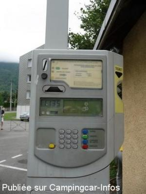
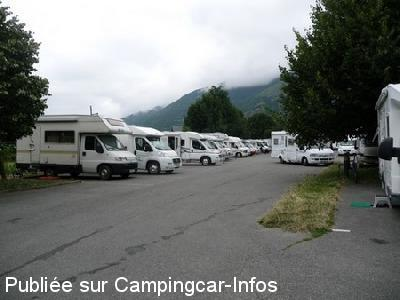
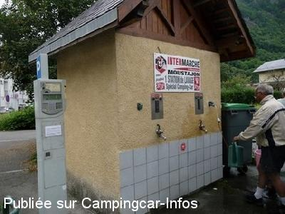
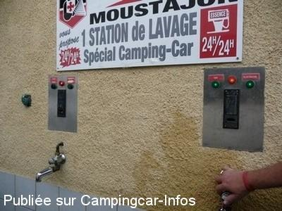
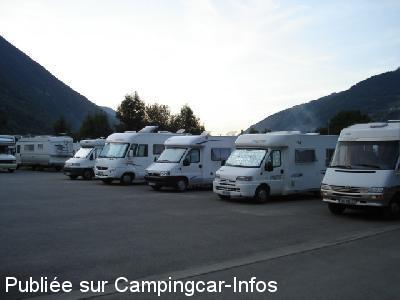

ASN = Aire de services avec stationnement nuit possible de :
BAGNÈRES DE LUCHON
(N° 708)
Accès/adresse :
Rue Jean Mermoz
31110 BAGNÈRES DE LUCHON
31110 BAGNÈRES DE LUCHON
Latitude : (Nord) 42.79492° Décimaux ou 42° 47′ 41′′
Longitude : (Est) 0.59837° Décimaux ou 0° 35′ 54′′
Tarif : 2014
Stationnement, paiement par horodateur :
12 Heures : 2 €
24 Heures : 4 €
Services : 4 €
Jetons à l'Office du Tourisme : 18 allée d'Etigny
Type de borne : Artisanale
Services :


Passage de 2 boulangers
Autres informations :
Ouverte toute l'année
La borne les services fonctionnent d'avril à novembre
30 emplacements
Tél : +33(0)561 792 121
2 prises électriques
http://www.luchon.com/

Le 22/07/2012 par Fanfan

Le 22/07/2012 par Fanfan

Le 22/07/2012 par Fanfan

Le 22/07/2012 par Fanfan

Le 31/07/2006 par jean_paul.bedouet
de
Roland 61
le 27/07/2014 :
2 € pour 12h ou 4€ par 24 h. (horodateur : monnayeur) les emplacements manquent de largeur. Vidanges eaux usées et WC gratuites. Belles ballades à proximité le long d'une rivière menant à un plan d'eau.
2 € pour 12h ou 4€ par 24 h. (horodateur : monnayeur) les emplacements manquent de largeur. Vidanges eaux usées et WC gratuites. Belles ballades à proximité le long d'une rivière menant à un plan d'eau.
de
Papé Jack
le 30/05/2014 :
de passage le 25 mai 2014 ,aire sympas,avec services mais pas de vidange des eaux usées.
4 euros les 24 heures ,très belle promenade sur place ,et près du centre ville.
de passage le 25 mai 2014 ,aire sympas,avec services mais pas de vidange des eaux usées.
4 euros les 24 heures ,très belle promenade sur place ,et près du centre ville.
de
Alain
le 28/07/2013 :
avons passé la nuit de vendredi à samedi
dommage le manque d'arbres et de bornes électriques(uniquement les 2 prises sur la photo
à savoir:
si quelqu'un est branché sur une prise,l'eau est gratuite
La guinguette au bout de l'allée a l'air sympa
une navette gratuite effectue des rotations pour les curistes aux bains
si le séjour tombe lors du festival rock,prévoir les boules quies
avons passé la nuit de vendredi à samedi
dommage le manque d'arbres et de bornes électriques(uniquement les 2 prises sur la photo
à savoir:
si quelqu'un est branché sur une prise,l'eau est gratuite
La guinguette au bout de l'allée a l'air sympa
une navette gratuite effectue des rotations pour les curistes aux bains
si le séjour tombe lors du festival rock,prévoir les boules quies
de
lukic
le 23/07/2012 :
Aire idéale pour ceux qui aiment être serres comme des sardines avec maxi 50 cm de chaque côté!
Comment peut on tracer des emplacements payants si étroits pour des campings cars sans réfléchir auparavant?
Bonjour les dégâts en cas d'incendie.
Aire idéale pour ceux qui aiment être serres comme des sardines avec maxi 50 cm de chaque côté!
Comment peut on tracer des emplacements payants si étroits pour des campings cars sans réfléchir auparavant?
Bonjour les dégâts en cas d'incendie.
de
pivoinerose
le 07/07/2012 :
§ Nous sommes arrêtés sur cette aire le 18 juin 2012. Le tarif est de 4€ pour 24h, services compris.
Nous y sommes restés deux jours. N'avons pas eu la visite des forces de l'ordre.
Aire calme, proche du centre et d'un lac.
Les places sont en effet un peu étriquées pour un CC.
Vidange eaux usées et eaux noires dans la même trappe.
Aire très fréquentée
§ Nous sommes arrêtés sur cette aire le 18 juin 2012. Le tarif est de 4€ pour 24h, services compris.
Nous y sommes restés deux jours. N'avons pas eu la visite des forces de l'ordre.
Aire calme, proche du centre et d'un lac.
Les places sont en effet un peu étriquées pour un CC.
Vidange eaux usées et eaux noires dans la même trappe.
Aire très fréquentée
de
BIGMYCH
le 28/09/2011 :
Área con lo necesario, dificil vaciado de grises si no tienes vaciado lateral lo pones todo chorreando !!
Tranquilo aunque hay gente " acampada"
Josep (BIGMYCH)
Área con lo necesario, dificil vaciado de grises si no tienes vaciado lateral lo pones todo chorreando !!
Tranquilo aunque hay gente " acampada"
Josep (BIGMYCH)
de
patrice
le 05/09/2011 :
Dommage les emplacements ne sont pas étudiés pour des CC et beaucoup débordent sur 2 places!
Dommage les emplacements ne sont pas étudiés pour des CC et beaucoup débordent sur 2 places!
de
pascal
le 26/10/2010 :
Aire calme, bien située, ville animée et sympa. En revanche :
- le branchement est archaïque : une prise pour plusieurs c.cars, donc toujours les mêmes qui payent et les autres en profitent...
- l'eau qui coulent en même temps...
- la Police Municipale pas très sympa (bien que l'avertissement avait déjà été noté sur ce site mais là...) : à peine arrivé en 10 min, le temps de s'installer (aller chercher de la monnaie) et une belle contravention sur le pare-brise... On a beau s'expliquer avec eux surtout sur le fait qu'ils auraient pû comprendre déjà qu'avec le capot encore bien chaud on venait d'arriver et qu'avec un bébé de 1 mois 1/2, on ne fait pas toujours ce que l'on veut rapidement... Dialogue de sourds ! Dommage...
Aire calme, bien située, ville animée et sympa. En revanche :
- le branchement est archaïque : une prise pour plusieurs c.cars, donc toujours les mêmes qui payent et les autres en profitent...
- l'eau qui coulent en même temps...
- la Police Municipale pas très sympa (bien que l'avertissement avait déjà été noté sur ce site mais là...) : à peine arrivé en 10 min, le temps de s'installer (aller chercher de la monnaie) et une belle contravention sur le pare-brise... On a beau s'expliquer avec eux surtout sur le fait qu'ils auraient pû comprendre déjà qu'avec le capot encore bien chaud on venait d'arriver et qu'avec un bébé de 1 mois 1/2, on ne fait pas toujours ce que l'on veut rapidement... Dialogue de sourds ! Dommage...
de
Sylvain Fourment
le 26/09/2009 :
Ayant mon travail à Luchon et natif de cette vallée, je vis depuis un an à une centaine de kilomètres de là. J'utilise l'aire toute l'année en moyenne 2 jours par semaine. Il m'arrive, avec honte pour ma vallée, de me rendre compte que la police municipale joue des roles de caïds. Dernièrement, j'ai assisté à un controle de tickets assez violent envers des étrangers à peine arrivés sur l'aire. Le moteur a peine coupé, la police a littéralement agressé ce couple de Danois agés d'une 60aine d'années. Ne comprenant rien à la langue francaise, ces pauvres gens tentaient de demander où se trouvait l'endroit pour obtenir un ticket de parking. Aucun des deux agents n'a essayé de comprendre.
La Police Municipale frappe régulièrement à votre porte et ouvre celle-ci sans scrupule si votre porte n'est pas verrouillée. Cela ressemble vraiment à une perquisition musclée. J'ai honte de ma ville. Il a fallu que j'intervienne moi-même en tant qu'enfant du pays. Faisant partie d'une de mes connaissances personnelles, j'ai adressé un courrier au maire, pour lui rapporter les faits.
Si vous venez à Luchon et que des problèmes de cette envergure vous arrivent, n'hésitez pas à me le faire savoir sur ce forum. J'interviendrai auprès de la commune par solidarité de notre passion. Cordialement.
Ayant mon travail à Luchon et natif de cette vallée, je vis depuis un an à une centaine de kilomètres de là. J'utilise l'aire toute l'année en moyenne 2 jours par semaine. Il m'arrive, avec honte pour ma vallée, de me rendre compte que la police municipale joue des roles de caïds. Dernièrement, j'ai assisté à un controle de tickets assez violent envers des étrangers à peine arrivés sur l'aire. Le moteur a peine coupé, la police a littéralement agressé ce couple de Danois agés d'une 60aine d'années. Ne comprenant rien à la langue francaise, ces pauvres gens tentaient de demander où se trouvait l'endroit pour obtenir un ticket de parking. Aucun des deux agents n'a essayé de comprendre.
La Police Municipale frappe régulièrement à votre porte et ouvre celle-ci sans scrupule si votre porte n'est pas verrouillée. Cela ressemble vraiment à une perquisition musclée. J'ai honte de ma ville. Il a fallu que j'intervienne moi-même en tant qu'enfant du pays. Faisant partie d'une de mes connaissances personnelles, j'ai adressé un courrier au maire, pour lui rapporter les faits.
Si vous venez à Luchon et que des problèmes de cette envergure vous arrivent, n'hésitez pas à me le faire savoir sur ce forum. J'interviendrai auprès de la commune par solidarité de notre passion. Cordialement.
de
cc76
le 22/08/2008 :
Nous y sommes en ce moment pour la fête des fleurs.
Beaucoup de monde mais calme la nuit. Tarif 2€ pour 12h
Nous y sommes en ce moment pour la fête des fleurs.
Beaucoup de monde mais calme la nuit. Tarif 2€ pour 12h
de
guy guerrini
le 06/02/2007 :
nuit du 02 au 03 février 2007. 10 cc environ garés sur cette aire spacieuse qui peut en accueillir bien plus . Centre ville un peu loin à pieds si le temps est mauvais ( probablement un bon km ) , mais commerces à 300 m ( intermarché et lidl ). borne eau et électricité hors gel mais vidanges des eaux possible dans le même regard sous une plaque de tôle un peu maculée ( salissant , en hiver se munir de quoi se laver les mains car le robinet d'eau est fermé ) .. pas très propre pourrait être amélioré .l'aire est très tranquille la nuit .
nuit du 02 au 03 février 2007. 10 cc environ garés sur cette aire spacieuse qui peut en accueillir bien plus . Centre ville un peu loin à pieds si le temps est mauvais ( probablement un bon km ) , mais commerces à 300 m ( intermarché et lidl ). borne eau et électricité hors gel mais vidanges des eaux possible dans le même regard sous une plaque de tôle un peu maculée ( salissant , en hiver se munir de quoi se laver les mains car le robinet d'eau est fermé ) .. pas très propre pourrait être amélioré .l'aire est très tranquille la nuit .